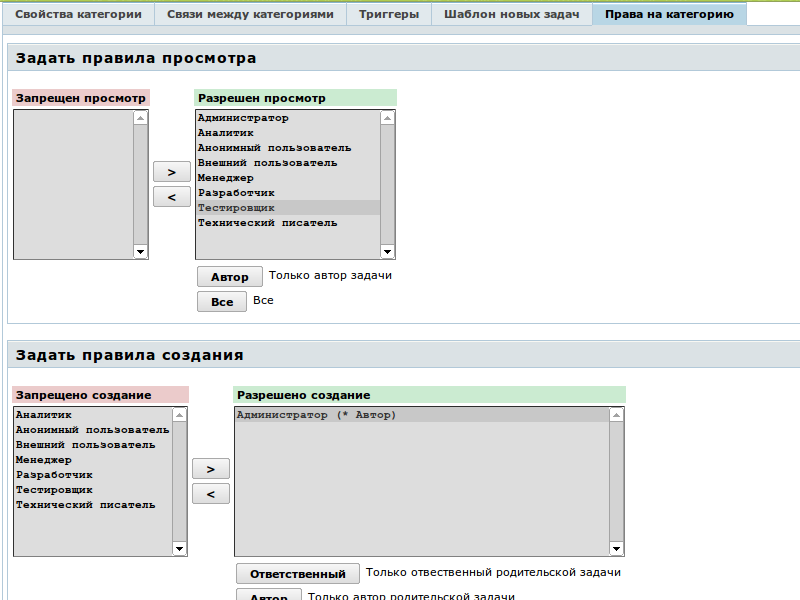

|
<< Click to Display Table of Contents >> Navigation: Rus > Руководство администратора > Как определить и настроить категории задач > Как настроить права для пользователей на задачи с определенной категорией |
Вы можете настроить правила, по которым пользователи с определенными ролями смогут или не смогут создавать, редактировать и удалять задачи с определенной категорией, а также быть за них ответственными. Для того, чтобы задать права доступа для категорий, перейдите к нужной категории через меню и выберите вкладку "Права на категорию".
Настройки каждого из правил представлены в виде пар списков ролей. Пользователи с ролями из левого списка не могут выполнять определенные действия, пользователи из правого — могут.

При создании категории для нее автоматически выставляются разрешительные права для всех ролей, к которым есть доступ у создателя категории.
Настройки правил не должны противоречить друг другу. Например, нельзя разрешить создание, редактирование или удаление задачи, но не разрешить просмотр. Также необходимо разрешать редактирование задачи, если вы разрешаете ее создание.
Особое внимание следует уделить правилу просмотра задач с данной категорией. Запрещать просмотр следует только в исключительных случаях, особенно — для задач-контейнеров, которые содержат подзадачи. Ведь если пользователь не может видеть задачи определенной категории, подзадачи ему также не будут доступны, независимо от настроек.
Для каждой роли из списка разрешенных вы также можете указать определенные модификаторы. Так, например, вы можете разрешить просмотр задач определенной категории не всем менеджерам, а только Менеджеру, являющемуся автором задачи. Или же разрешить редактирование задачи только назначенному на нее ответственному с ролью Разработчик. Для того, чтобы использовать модификатор, выберите нужную роль (или роли) из списка и нажмите кнопку модификатора. Вы можете использовать два модификатора (Автор иОтветственный), если они доступны. Пары модификаторов работают по ИЛИ.
Для каждого из правил есть особенности использования этих модификаторов, которые необходимо осветить дополнительно.
Для этого правила допустим только модификатор Автор. В ранних версиях TrackStudio можно было также использовать модификатор Ответственный, но затем такая возможность была убрана, т.к. она приводила к коллизиям при выполнении триггеров: если вы передавали задачу другому пользователю через выполнение операции, а к этой операции был привязан триггер, этот триггер уже никак не мог выполниться от вашего имени.
Впрочем, учитывая, что в новых версиях TrackStudio можно менять с помощью триггеров автора задачи, поломать систему можно и при нынешних ограничениях.
Т.к. до создания задачи сама задача не существует*, в данном случае модификаторы Автор и Ответственный применяются для вышестоящей задачи. Таким образом можно, например, разрешить заполнять список требований только ответственному за определенный компонент.
Для этих правил всё просто: Автор — это автор задачи, Ответственный — ее ответственный.
А вот с этим правилом всё не так просто. Здесь Автор и Ответственный снова относятся к вышестоящей, а не текущей задаче. И действует это правило в процессе создания задачи. Проще говоря, оно определяет список пользователей, который будет выведен в поле выбора ответственного при создании задачи. На остальных же этапах действуют правила, заданные для процесса, к которому относится категория.